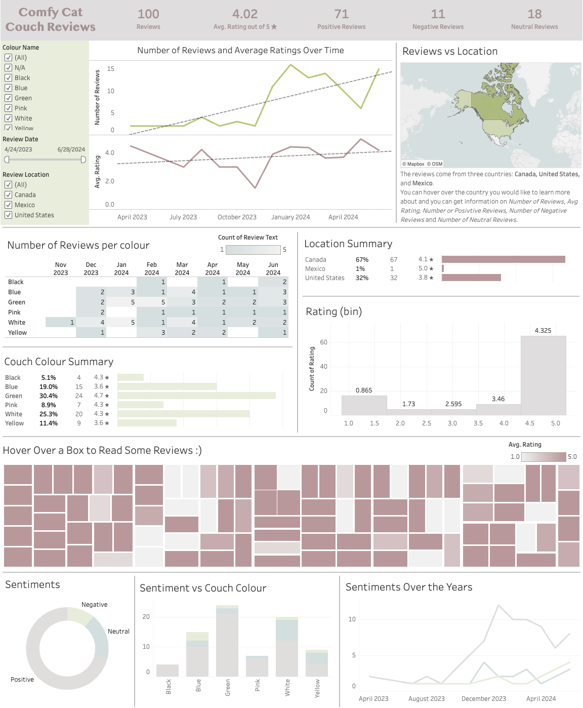
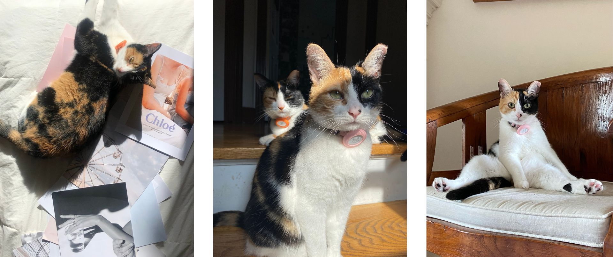

Cat Sofa Customer Review Analysis
Customer reviews and ratings analysis and visualization
Link to project repository on GitHub
I am always looking for ways to spoil my cats. While browsing on Amazon I came across this super cool cat couch (link). So for this project I gathered the data on the customer reviews. And I will create a simple dashboard to display the informtation I've gathered once I have cleaned it.
- Web Scraping (Python)
- Data Cleaning (Excel)
- Data Visualization (Tableau)
- Bonus Part: EDA on Text Sentiment (R)
-
Part 1: Web scraping
In python I used BeautifulSoup and Selenium to login to Amazon, parse through the review pages and collect the revivew information. I also added a sentiment column based on the review text. -
Part 2: Data cleaning (Link takes you to cleaned dataset)
I cleaned the dataset from Part 1 in Excel and it now has the following information:- Reviewer Name: The username of the person leaving the review
- Title: The title of the review
- Colour Name: The colour the cat couch was purchased in
- Rating: The rating given by the reviewer (out of 5 stars)
- Review Location: The country where the reviewer is located
- Review Date: Date the review was posted (yyyy-mm-dd)
- Review Text: The text description of the review
- Sentiment: The sentiment of the review text
-
Part 3: Data Visualization
I have created a very simple dashboard in Tableau.
 -
Part 4 Simple EDA on Text Sentiment
Very simple EDA on text and sentiment. This is similar to my EDA from my UFO project.
My Cats
For those who are interested, here are photos of my cats who inspired this project. Their names and Chevy and Bunny and they are sisters. They are very nosy, and they love belly rubs.